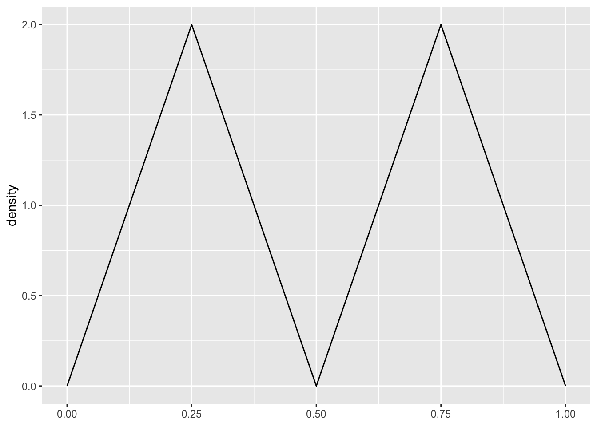
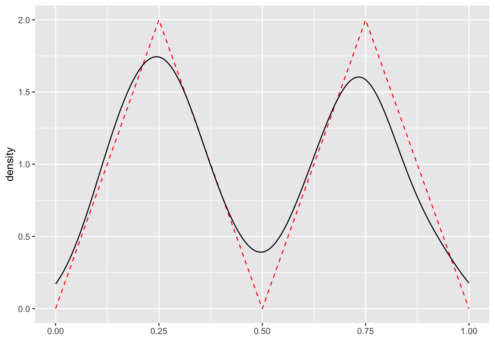
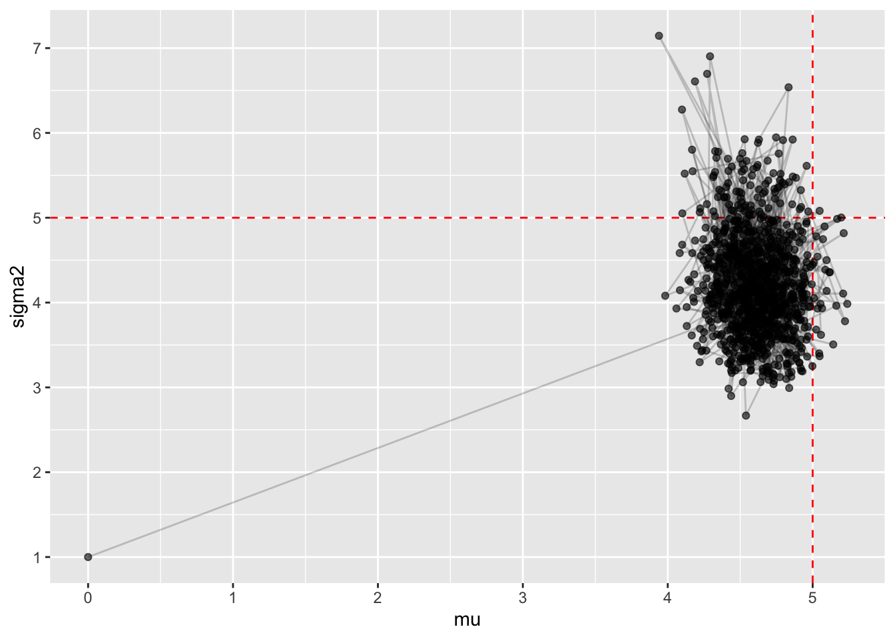

options(scipen = 999999)
options(tidyverse.quiet = TRUE)
library(conflicted)
library(tidyverse)
set.seed(1234)Metropolis-Hastings Algorithm: An Explanation with Demonstration
Let \(\pi\) be a probability distribution on a finite state space \(S=\{1,...,n\}\), i.e., \(\pi(i)\) denotes the probability of being in state \(i\in S\). We want to construct a Markov chain1 that takes value on the state space \(S\) such that its stationary distribution is \(\pi\). That is, we want to find transition probabilities \(\{P_{ij}\}_{i,j}\)2 such that \[ \sum_{i=1}^{n} \pi(i) P_{ij} = \pi(j) \quad \forall j\in S \tag{1}\] holds. Equation 1 is known as the Global Balance Equation. It is global in the sense that it sums over all states \(i\). Note that this balance equation means that if one starts in state \(i\) with probability \(\pi(i)\) and transitions to state \(j\) with probability \(P_{ij}\), then the probability of being in state \(j\) after one step is exactly \(\pi(j)\). That is, \(P_{ij}\) has stationary distribution \(\pi\) by definition.
1 A Markov chain is a stochastic process that satisfies the Markov property, meaning the future state depends only on the current state and not on the sequence of events that preceded it. For this demonstration, one just needs to know that it is a sequence of random variables jumping from state to state with transition probabilities.
2 Transition probabilities \(P_{ij}\) denote the probability of moving from state \(i\) to state \(j\) in one step.
However, finding \(P_{ij}\) that satisfies Equation 2 can be difficult to satisfy in practice, since \(n\) might be so large that it is infeasible to compute the sum over all states \(i\). There is another notion of balance that is easier to satisfy, known as the Detailed Balance Equation: \[ \pi(i) P_{ij} = \pi(j) P_{ji} \quad \forall i,j\in S \tag{2}\] Equation 2 is detailed in the sense that it only requires a balance between two states \(i\) and \(j\). Notice that Equation 2 implies Equation 1: \[ \sum_{i=1}^{n} \pi(i) P_{ij} = \sum_{i=1}^{n} \pi(j) P_{ji} = \pi(j) \sum_{i=1}^{n} P_{ji} = \pi(j) \] Since Equation 2 is stated locally for each pair of states \(i\) and \(j\), it is much easier to construct the required probabilities \(P_{ij}\) and \(P_{ji}\). Another remarkable property of Equation 2 is that we don’t even have to know the stationary distribution \(\pi\) exactly, we just need to know the ratio \(\pi(j)/\pi(i)\) for any two states \(i\) and \(j\). This motivates the Metropolis-Hastings algorithm.
Metropolis-Hastings Algorithm
Theorem 1 (Metropolis-Hastings Algorithm) Given the target distribution \(\pi\), construct a Markov chains as follows: Arbitrarily fix an initial state \(I_0=i_0\in S\). Suppose that at time \(t\geq 0\), the current state is \(I_t=i\). Then, the next state \(I_{t+1}\) is generated as follows:
- Generate \(J\sim\{\tilde{P}_{ij}\}\) where \(\{\tilde{P}_{ij}\}\) is an arbitrary transition probability3 on \(S\). Let \(j\) denote the realized state of \(j\). That is, \(J\) satisfies \[ \Pr\{J=j\,|\,I_t=i\} = \tilde{P}_{ij}. \]
- Set the state of \(I_{t+1}\) according to the following rule: \[ I_{t+1} = \begin{cases*} j & \text{ with probability $\alpha(i,j)$ } \\ i & \text{ otherwise} \end{cases*} \tag{3}\] where \[ \alpha(i,j) = \min\left\{1, \frac{\pi(j) \tilde{P}_{ji}}{\pi(i) \tilde{P}_{ij}}\right\}. \tag{4}\]
3 The transition probabilities \(\{\tilde{P}_{ij}\}\) is called the proposal distribution. It is arbitrary in the sense that it does not need to satisfy Equation 2.
Then, the chain \(\{I_t\}_{t\geq 0}\) is a Markov chain with stationary distribution \(\pi\).
In other words, the transition probabilities \(\{P_{ij}\}\) where \(P_{ij}\coloneqq\alpha(i,j)\tilde{P}_{ij}\) has stationary distribution \(\pi\). One immediately sees that there is something magical about the acceptance ratio \(\alpha(i,j)\) defined in Equation 4, as it turns an arbitrary proposal distribution \(\{\tilde{P}_{ij}\}\) into a transition probability with the desired stationary distribution. Equation 4 is known as the Metropolis-Hastings acceptance ratio, or simply the acceptance ratio. Its importance can be seen in the proof for Theorem 1:
Proof. Let \(i,j\in S\) be two arbitrary states. We have \(P_{ij}=\alpha(i,j)\tilde{P}_{ij}\). We show that Equation 2 holds: \[ \pi(i) P_{ij} = \pi(i) \alpha(i,j) \tilde{P}_{ij} = \pi(i) \min\left\{1, \frac{\pi(j) \tilde{P}_{ji}}{\pi(i) \tilde{P}_{ij}}\right\} \tilde{P}_{ij} = \begin{cases} \pi(j) \tilde{P}_{ji} & \text{ if } \pi(j)\tilde{P}_{ji} \leq \pi(i)\tilde{P}_{ij} \\ \pi(i) \tilde{P}_{ij} & \text{ otherwise. } \end{cases} \] On the other hand, we have \[ \pi(j) P_{ji} = \pi(j) \alpha(j,i) \tilde{P}_{ji} = \pi(j) \min\left\{1, \frac{\pi(i) \tilde{P}_{ij}}{\pi(j) \tilde{P}_{ji}}\right\} \tilde{P}_{ji} = \begin{cases} \pi(i) \tilde{P}_{ij} & \text{ if } \pi(i)\tilde{P}_{ij} \leq \pi(j)\tilde{P}_{ji} \\ \pi(j) \tilde{P}_{ji} & \text{ otherwise. } \end{cases} \] Therefore, \(\pi(i) P_{ij} = \pi(j) P_{ji}\) holds for all \(i,j\in S\), i.e., the detailed balance equation (Equation 2) is satisfied. And since detailed balance equation implies global balance equation (Equation 1), this completes the proof. #
In the proof, we see that the acceptance ratio \(\alpha(i,j)\) is designed to ensure that the detailed balance equation holds. In many applications, the proposal distribution is not drawn from a Markov chain, but from a proposal distribution, say with probability mass function \(\tilde{f}\), independently and identically. Hence, acceptance ratio can be simplified to \[ \alpha(i,j) = \min\left\{1, \frac{\pi(j) \tilde{f}(i)}{\pi(i) \tilde{f}(j)}\right\}. \] One can more easily interpret acceptance ratio \(\alpha(i,j)\) in this simplified context: if the proposed state \(j\) has a high probability in \(\pi\), then we are more likely to accept it, however, if \(\pi(j)\) is low and we proposed \(j\) simply because \(\tilde{f}(j)\) is high, then we are less likely to accept it. This trade-off perfectly modifies proposal distribution \(\tilde{f}\) so that the detailed balance equation holds.
Demonstration
Let’s see how the Metropolis-Hastings algorithm works in practice. Say that we have the following target distribution with density dtriangle2:
dtriangle2 <- function(x) {
dplyr::case_when(
x < 0.00 ~ 0,
x < 0.25 ~ 8 * x,
x < 0.50 ~ 4 - 8 * x,
x < 0.75 ~ -4 + 8 * x,
x < 1.00 ~ 8 - 8 * x,
.default = 0
)
}Its density function looks like this:
ggplot() +
geom_function(fun = dtriangle2) +
xlim(0, 1) +
ylab("density")
One can see that this non-standard distribution is two humped, making it difficult to sample from. Hence, we want to make use of the Metropolis-Hastings algorithm to create a Markov chain with dtriangle2 as its stationary distribution.
The Metropolis-Hastings algorithm can be implemented as follows:
metropolis_hastings_algorithm <- function(
target_density,
propose,
proposal_density,
inital_state,
length_of_chain = 1000
) {
output_chain <- numeric(length_of_chain)
output_chain[1] <- inital_state
state <- inital_state
for (trial in 2:length_of_chain) {
proposal <- propose(state)
log_metropolis_ratio <-
log(target_density(proposal)) +
log(proposal_density(proposal, state)) -
log(target_density(state)) -
log(proposal_density(state, proposal))
if (log(runif(1)) < log_metropolis_ratio) state <- proposal
output_chain[trial] <- state
}
return(output_chain)
}- 1
-
target_densityis the target distribution we want to sample from. In this case, it isdtriangle2. - 2
-
proposeis a function that generates a proposal state given the current state. That is, it draws the \(J\) in Theorem 1. - 3
-
proposal_densityis the probability of proposing \(j\) given state \(i\), i.e., \(\tilde{P}_{ij}\). - 4
-
inital_stateis the initial state of the Markov chain, i.e., \(I_0\). - 5
-
length_of_chainis the length of the Markov chain, i.e., how many states we want to generate. - 6
- For each trial, first we generate a proposal given the current state.
- 7
- Then, we compute the Metropolis-Hastings acceptance ratio \(\alpha(i,j)\). Note that we use the logarithm of the ratio to avoid numerical underflow.
- 8
- We accept the proposal according to Equation 3: If the ratio is greater than 1, we accept the proposal; if it is less than 1, we accept it with probability equal to the ratio.
- 9
- Finally, we store the state in the output chain.
Now let’s run the Metropolis-Hastings algorithm and see its output. We use a simple proposal distribution that draws a proposal iid from a uniform distribution on the interval \([0,1]\). That is, the proposal density \(\tilde{f}\) is a constant function equal to \(1\) on the interval \([0,1]\).
output_chain <- metropolis_hastings_algorithm(
target_density = dtriangle2,
propose = function(state) runif(1),
proposal_density = function(i, j) 1,
inital_state = 0.2
)
head(output_chain)- 1
- We draw a proposal iid from a uniform distribution.
- 2
- The proposal density is a constant function since we draw the proposal iid from a uniform distribution.
[1] 0.2000000 0.2000000 0.2000000 0.8609154 0.8609154 0.6660838One can see that since dtriangle2 at inital_state = 0.2 has relatively high density, it took several trials before a proapsal was accepted and the chain started to explore the state space. Let’s visualize the output chain by a density plot of the values in the chain:
list(x = output_chain) %>%
as_tibble() %>%
ggplot() +
aes(x = x) +
geom_function(fun = dtriangle2, linetype = "dashed", color = "red") +
geom_density() +
xlim(0, 1) +
xlab("") +
ylab("density")
As expected, the density of the output chain matches the target distribution dtriangle2 very well.
Gibbs Sampling
Gibbs sampling is a variation of the Metropolis-Hastings algorithm that makes sampling high-dimensional distributions more efficient.
For illustration, let \(\pi(a,b)\) be a distribution on \(S\times S\) for \(a\in S\) and \(b\in S\). Following the Metropolis-Hasting algorithm, we can view the pair \((a,b)\) as a single state and perform the sampling. However, if \(\pi(a\,|\,b)\) and \(\pi(b\,|\,a)\) are easy to sample from, then we can sample \(a\) and \(b\) in alternation. And the Gibbs sampling algorithm guarantees that the resulting Markov chain has stationary distribution \(\pi(a,b)\).
Theorem 2 (Gibbs Sampling) Given a target distribution \(\pi(a,b)\), construct a Markov chain as follows. Arbitrarily fix an initial state \((a_0,b_0)\). In the iteration at time \(t\), perform the following:
- Sample \(a_{t+1}\) from \(\pi(a\,|\,b_{t})\)
- Sample \(b_{t+1}\) from \(\pi(b\,|\,a_{t+1})\)
Then, Markov chain \(\{(a_t,b_t)\}_{t\geq 0}\) has stationary distribution \(\pi\).
Proof. Following the proof of Theorem 1, note that \(\pi(a\,|\,b)\) and \(\pi(b\,|\,a)\) are proposal distributions. Thus, we only have to show that under these proposal distributions, we always accept the proposed state, i.e., the acceptance ratio \(\alpha(i,j)\) is always \(1\).
Let \((a,b)\) be the current state and let \(a'\sim\pi(a\,|\,b)\) be the proposal. Consider the following: \[ \begin{aligned} \alpha((a,b),(a',b)) &= \min\left\{\frac{\pi(a',b)}{\pi(a,b)}\frac{\pi(a\,|\,b)}{\pi(a'\,|\,b)},1\right\} \\ &= \min\left\{\frac{\pi(a'\,|\,b)\pi(b)}{\pi(a\,|\,b)\pi(b)}\frac{\pi(a\,|\,b)}{\pi(a'\,|\,b)},1\right\} = 1. \end{aligned} \] Similarly, we can also show that the proposed \(b'\sim\pi(b\,|\,a)\) is also always accepted. Therefore, \(\{(a_t,b_t)\}_{t\geq 0}\) is a Markov chain with stationary distribution \(\pi(a,b)\), and this completes the proof. #
It is remarkable that Gibbs sampling never rejects a proposal. In many practical cases, the conditional distributions \(\pi(a\,|\,b)\) and \(\pi(b\,|\,a)\) are known and easy to sample from, but the joint distribution \(\pi(a,b)\) is not. Even if we don’t know how to sample from either \(\pi(a\,|\,b)\) or \(\pi(b\,|\,a)\), we can always turn to the Metropolis-Hastings algorithm. That is, we can replace the sampling steps in Gibbs sampling with the Metropolis-Hastings algorithm. This is known as the Metropolis-Hastings within Gibbs method, which is a common method to general samples from high-dimensional distributions efficiently.
Demonstration
Let’s see how Gibbs sampling works in practice. Consider the following Bayesian estimation problem: We are given iid samples \(\{X_t\}_{t=1}^{T}\) drawn from a normal distribution with unknown mean \(\mu\) and variance \(\sigma^2\). With prior distributions on \(\mu\) and \(\sigma^2\), we want to compute the posterior mean of \(\mu\) and \(\sigma^2\) to serve as point estimates. In this case, the target distribution is the posterior distribution \(\pi(\mu,\sigma^2\,|\,\{X_t\})\).
First, we set up the parameters of the problem:
true_params <- list(mu = 5, sigma2 = 5)
prior_params <- list(
mu = list(mean = 0, variance = 1),
sigma2 = list(shape = 1, scale = 1)
)- 1
- The true parameters of the normal distribution we want to estimate.
- 2
- The hyper-parameters of the prior distributions. We use a standard normal distribution as the prior for \(\mu\) and an inverse gamma distribution as the prior for \(\sigma^2\) with shape and scale parameter both equal to 1.
And generate the data accordingly:
data <- rnorm(
n = 100,
mean = true_params$mu,
sd = sqrt(true_params$sigma2)
)
head(data)- 1
- Generate iid samples from a normal distribution with the true parameters.
[1] 4.003478 2.304793 5.674100 1.558367 6.420732 6.571848Since we deliberately pick conjugate priors (normal-normal and inverse gamma-normal conjugacy), we know how to draw from both conditional distribution \(\pi(\mu\,|\,\{X_t\},\sigma^2)\) and \(\pi(\sigma^2\,|\,\{X_t\},\mu)\) directly.4 We summarize how to sample from the conditional distributions in the following two functions:
4 Conjugate priors are prior distributions that, when combined with a likelihood function, yield a posterior distribution of the same family as the prior. These type of priors simplify the Bayesian estimation process, as the posterior distribution can be easily computed and sampled from. For the exact formulae you can look them up on Wikipedia.
sample_posterior_mu <- function(params, data) {
posterior_variance <- solve(
1 / prior_params$mu$variance + length(data) / params$sigma2
)
posterior_mean <- posterior_variance * (
prior_params$mu$mean / prior_params$mu$variance +
sum(data) / params$sigma2
)
rnorm(1, mean = posterior_mean, sd = sqrt(posterior_variance))
}
sample_posterior_sigma2 <- function(params, data) {
posterior_shape <- prior_params$sigma2$shape + length(data) / 2
posterior_scale <- prior_params$sigma2$scale + sum((data - params$mu)^2) / 2
1 / rgamma(1, shape = posterior_shape, scale = 1 / posterior_scale)
}- 1
- This bit samples from the inverse gamma distribution.
The input params is a list (containing mu and sigma2) that represents the current state of the Markov chain. Note that these two function uses information from the params input. That is, sample_posterior_mu uses params$sigma2 in its definition and sample_posterior_sigma2 uses params$mu. This is precisely how Gibbs sampling as defined in Theorem 2 works.
Finally, we can implement the Gibbs sampling algorithm as follows:
gibbs_sampling <- function(
data,
initial_params = list(mu = 0, sigma2 = 1),
length_of_chain = 1000
) {
output_chain <- vector(mode = "list", length = length_of_chain)
output_chain[[1]] <- initial_params
params <- initial_params
for (trial in 2:length_of_chain) {
params$mu <- sample_posterior_mu(params, data)
params$sigma2 <- sample_posterior_sigma2(params, data)
output_chain[[trial]] <- params
}
return(output_chain)
}- 1
-
The state (
params) is updated one parameter at a time, first sampling \(\mu\) given the current \(\sigma^2\) and then sampling \(\sigma^2\) given the current \(\mu\). - 2
- The updated state is then stored in the output chain.
Let’s run the Gibbs sampling algorithm and calculate the posterior means:
gibbs_chain <- gibbs_sampling(
data = data,
initial_params = list(mu = 0, sigma2 = 1)
) %>%
purrr::map_df(function(x) as_tibble(x))
mean(gibbs_chain$mu)
mean(gibbs_chain$sigma2)- 1
- Turn the output chain into a data frame for easier manipulation and visualization.
[1] 4.606705
[1] 4.215542As expected, the posterior means of \(\mu\) and \(\sigma^2\) are close to the true parameters. Now let’s visualize the output chain.
gibbs_chain %>%
ggplot() +
aes(x = mu, y = sigma2) +
geom_vline(
xintercept = true_params$mu,
linetype = "dashed",
color = "red"
) +
geom_hline(
yintercept = true_params$sigma2,
linetype = "dashed",
color = "red"
) +
geom_path(alpha = 0.2) +
geom_point(alpha = 0.6) +
scale_y_continuous(breaks = seq(1, true_params$sigma2 + 2, 1)) +
scale_x_continuous(breaks = seq(0, true_params$mu + 1, 1))
Usually in practice, remove the first few states in the chain to avoid the initial state bias. In high-dimensional problems, it might take a while for the Markov chain to converge to the stationary distribution, hence the first few states in the chain might not be representative of the stationary distribution. This period is known as the burn-in period. For demonstration purposes, we do not remove any burn-in period here, so you can see that our sampling path starts from the initial state \(\mu=0\) and \(\sigma^2=1\). Also, since our model is very simple, the Markov chain converges very quickly. Of course, this example is a bit silly since we can simply do
mean(data)[1] 4.802238var(data)[1] 4.18167to get good estimates of the parameters, but you get the idea.
Conclusion
The virtue of the Metropolis-Hastings algorithm is that it can sample from any distribution \(\pi\) (discrete or continuous) as long as we can compute the ratio \(\pi(j)/\pi(i)\) for any two states \(i\) and \(j\), but it might suffer from slow convergence in high-dimensional problems. Gibbs sampling is a special case of the Metropolis-Hastings algorithm where the proposal distribution is the conditional distribution of one variable given the other.
Metropolis-Hastings algorithm and Gibbs sample are but two of the many sampling algorithms that are used in practice. In general, these methods that utilizes properties of Markov chains to sample from distributions are called Markov Chain Monte Carlo (MCMC) methods.5 Nicholas Metropolis first invented its most basic form (known as Metropolis algorithm) in 1950s during the Manhattan Project. It was later generalized by W. K. Hastings in 1970s, hence it is now known as Metropolis-Hastings algorithm.6 Understanding the concepts behind the Metropolis-Hastings algorithm — global/detailed balance equation and acceptance ratio — is crucial for understanding many other MCMC methods.
5 The Monte Carlo part simply means that we use random sampling to approximate the desired distribution. John von Neumann and Stanislaw Ulam first introduced the term Monte Carlo simulation in the 1940s to describe method utilizing random sampling to solve problems.
6 The original Metropolis algorithm is a special case of the Metropolis-Hastings algorithm where the proposal distribution is symmetric, i.e., \(\tilde{P}_{ij} = \tilde{P}_{ji}\).